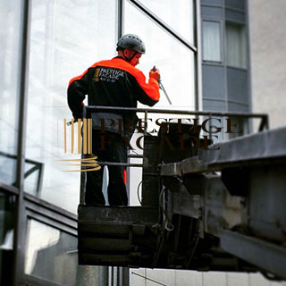

клининг фасадов
Среди множества организаций,
предлагающих клининговые услуги, Управляющие Компании выбирают Prestigefacade-cleaning.
Качественное выполнение работ в кратчайшие сроки с гибкими ценами дополняют использование современной клининговой техники и высококачественные моющие средства.
Уважайте себя и фасады вашиx зданий.
{kind=link}
Высотный клининг фасадов
- ответсвенный, требующий большого опыта вид клининговых работ. Руководство направления Prestige Fasade – Cleaning Выделяет большие средства на совершенствования навыков команды альпинистов высотников. Высокое качество удается показать благодаря сотрудничеству с лучшими производителями уникальных моющих средств. Использование Собственного оборудования для мойки фасадов позволяет держать адекватные цены на данном рынке услуг, минимизируя расходы на аренду. Тысячи квадратных метров стекло алюминиевых и других поверхностей фасадов отмывается профессионалами, для которых не существует трудностей.
Prestige Fasade – Cleaning специализируется на:
- Очистке зданий и сооружений от нагаров после пожара
- Очистке зданий и сооружений от атмосферных и иных загрязнений
- Обеспыливание конструкций
- Мойка витрин и рекламы
- Мойка вентилируемых фасадов
- Мойка памятников Архитектуры
- Очистка промышленных труб, окон дымоудаления
{kind=link}
Высотная мойка фасадов
- неотъемлемая ежегодная процедура по обслуживанию зданий и сооружений. От того, насколько чисто и ярко выглядит фасад, зависит общая привлекательность внимания к объекту. Что играет огромную роль при выборе людьми дома для покупки квартиры, бизнес-центра для аренды офиса, торгового комплекса для шоппинга. Мойка остекления фасадов в Санкт-Петербурге особенно актуальна за счёт особенностей переменного дождливого климата, запылено - загазованных улиц и проспектов. Огромное число туристов и резидентов страны стремиться выбрать культурную столицу местом для жизни и ведения бизнеса.
{kind=link}
Сезон высотной мойки фасадов в Санкт-Петербурге начинается с марта и продолжается до июня-августа. Все зависит от планирования бюджета обслуживающих компаний и состояния здания, поэтому многие организации не привязываются к сезону вообще.
Способы мойки остекления фасадов зависят от поставленной задачи и особенностей здания.
Клиниговые работы по очистке фасадов зданий могут производиться
- с земли используя систему для высотной мойки.
- на высоте методом промышленного альпинизма.
- на высоте используя передвижную автовышку.
Цена на мойку остекления фасадов и высотные клиниговые работы рассчитывается в коммерческом предложении после бесплатной оценки руководителем проекта состояния объекта и учета пожеланий заказчика.
- - Мойка фасада - от 25 рублей за м2
- - Мойка фасада с применением моющих средств - от 30 рублей за м2
- - Мойка фасада с применением щелочных средств - от 40 рублей за м2
- - Обеспыливание внутри производственных помещений - от 30 рублей за м2
- - Обработка фасадов защитными средствами - от 59 рублей за м2
- - Рабочий день бригады специалистов - от 10.000 рублей
{kind=link}
{kind=link}